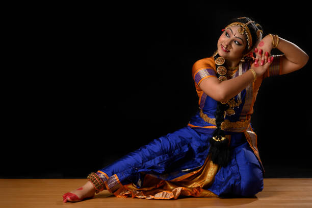

KuchipudiThe Dance of Andhra Pradesh |
|  |
About Kuchipudi:Kuchipudi is a classical dance form from Andhra Pradesh, India. It is known for its graceful movements and intricate footwork, often performed in temples. The dance is based on religious themes, particularly those from Hindu mythology, and includes both storytelling and solo performances. |